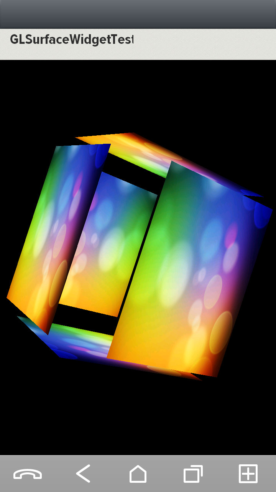
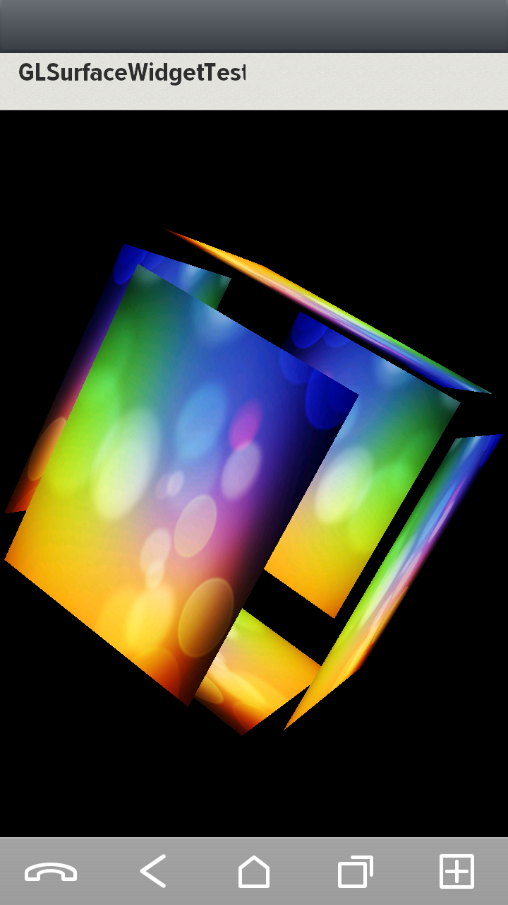
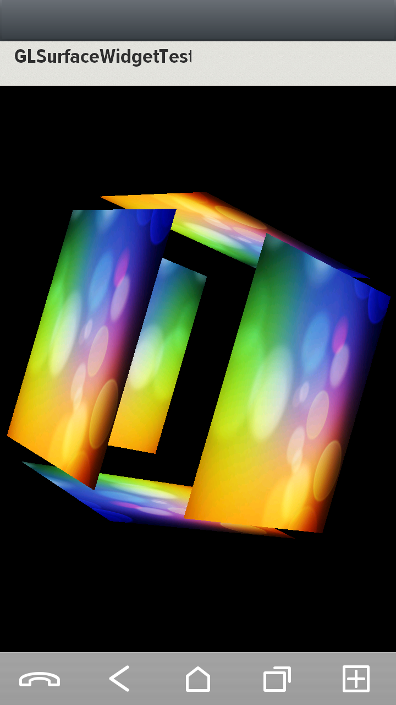

Gaia includes support for high performance 2D and 3D graphics with the Open Graphics Library (OpenGL), specifically, the OpenGL ES API.
OpenGL is a cross-platform graphics API that specifies a standard software interface for 3D graphics processing hardware. OpenGL ES is a flavor of the OpenGL specification intended for embedded devices. Gaia supports OpenGL ES 1.0 and 1.1 API specifications as well as OpenGL ES 2.0 API specification. The fundamental way to use OpenGL|ES APIs in Gaia is using GLSurfaceWidget.
GLSurfaceWidget class is a widget where you can draw and manipulate objects using OpenGL API calls and is similar in function to a SurfaceWidget. You can use this class by creating an instance of GLSurfaceWidget and adding your Renderer to it. However, if you want to capture touch screen events, you should extend the GLSurfaceWidget class to implement the touch listeners.
The GLSurfaceWidget.Renderer interface defines the methods required for drawing graphics in an OpenGL GLSurfaceWidget. You must provide an implementation of this interface as a separate class and attach it to your GLSurfaceWidget instance using GLSurfaceWidget->setRenderer().
The GLSurfaceWidget.Renderer interface requires that you implement the following methods:
onSurfaceCreated(): The system calls this method once, when creating the GLSurfaceWidget. Use this method to perform actions that need to happen only once, such as setting OpenGL environment parameters or initializing OpenGL graphic objects.
onDrawFrame(): The system calls this method on each redraw of the GLSurfaceWidget. Use this method as the primary execution point for drawing (and re-drawing) graphic objects.
onSurfaceChanged(): The system calls this method when the GLSurfaceWidget geometry changes, including changes in size of the GLSurfaceWidget or orientation of the device screen. For example, the system calls this method when the device changes from portrait to landscape orientation. Use this method to respond to changes in the GLSurfaceWidget container.
Once you have established a container widget for OpenGL using GLSurfaceWidget.Renderer, you can begin calling OpenGL APIs using the following classes:
gaia::core::GLES10gaia::core::GLES10Extgaia::core::GLES11gaia::core::GLES11Extgaia::core::GL10gaia::core::GL10Extgaia::core::GL11gaia::core::GL11Extgaia::core::GL11ExtensionPackgaia::core::GLES20GLSurfaceWidget is just one way to incorporate OpenGL ES graphics into your application. For a full-screen or near-full screen graphics view, it is a reasonable choice. Developers who want to incorporate OpenGL ES graphics in a small portion of their layouts should take a look at TextureWidget. For real, do-it-yourself developers, it is also possible to build up an OpenGL ES view using SurfaceWidget, but this requires writing quite a bit of additional code.
For refererence, you could see sdk/example/core/GLSurfaceWidgetTest/
In order to draw graphics with OpenGL ES in your GAIA application, firstly you must implement a Page like any other GAIA application.
The two most important classes to be implemented for using OpenGLES animation are:
GLSurfaceWidget - This is a widget container for graphics drawn with OpenGL. The developer can either implement a new class using GLSurfaceWidget, or can just create a new object inside the implementation of Page class.
Renderer - This controls what is drawn within that widget. This is a mandatory class, needs to implemented by the developer. All the OpenGL|ES animations to be shown using GLSurfaceWidget are implemented in this class.
In order for your application to use the OpenGL ES 2.0 API, you must add the following declaration to your manifest:
uses-feature android:glEsVersion="0x00020000" android:required="true"
If your application uses texture compression, you must also declare which compression formats you support so that devices that do not support theses formats do not try to run your application:
supports-gl-texture android:name="GL_OES_compressed_ETC1_RGB8_texture"
supports-gl-texture android:name="GL_OES_compressed_paletted_texture"
GAIA applications that use OpenGL ES have activities just like any other application that has a user interface. The main difference from other applications is what you put in the layout for your activity. While in many applications you might use Textwidget, Button and ListWidget, in an app that uses OpenGL ES, you can also add a GLSurfaceWidget.
The following code snippet shows a minimal implementation of Page for GLSurfaceWidget:
class GLSurfaceWidgetTestPage: public gaia::core::Page {private: gaia::core::Scene* mpScene; gaia::core::Context* mpCont; gaia::core::GLSurfaceWidget *mpGLSurfaceWidget; gaia::ui::LinearController* mpLinearController; gaia::core::Renderer* mpRender; FunctionDispatcher* mpDispatcher; public: virtual void onInit(gaia::core::Persistence* const p); virtual void onRestart(); virtual void onStart(); virtual void onResume(); virtual void onPause(); virtual void onStop(); virtual void onTear();};
A GLSurfaceWidget is a specialized widget where you can draw OpenGL ES graphics. It does not do much by itself. The actual drawing of objects is controlled in the GLSurfaceView.Renderer that you set on this widget. In fact, the code for this object is so thin, you may be tempted to skip extending it and just create an unmodified GLSurfaceView instance, but prefer not to do that. You need to extend this class in order to capture touch events.
The essential code for a GLSurfaceWidget is minimal, so for a quick implementation, it is common to just create an inner class in the Page that uses it:
MyGLView::MyGLView(const gaia::core::Context& context) : GLSurfaceWidget(context), EventControl(this) {mpRender = new PhotoCubeRenderer(*mpCont, *resource); setRenderer(mpRender); this->setOnTouchListener(this); this->setOnKeyListener(this); setFocusable(true); setFocusableInTouchMode(true);}
When using OpenGL ES 2.0, you must add another call to your GLSurfaceWidget constructor, specifying that you want to use the 2.0 API:
// Create an OpenGL ES 2.0 context
setEGLContextClientVersion(2);
If you are using the OpenGL ES 2.0 API, make sure you declare this in your application manifest too.
One other optional addition to your GLSurfaceWidget implementation is to set the render mode to only draw the view when there is a change to your drawing data using the GLSurfaceWidget::RENDERMODE_WHEN_DIRTY setting:
// Render the view only when there is a change in the drawing data
setRenderMode(GLSurfaceWidget::RENDERMODE_WHEN_DIRTY);
This setting prevents the GLSurfaceWidget frame from being redrawn until you call requestRender(), which is more efficient way of coding your application.
Developer can still show OpenGL animations using GLSurfaceWidget, even if a new class is not implemented for the GLSurfaceWidget container. But in that case, he/she might not be able to extend this class to capture touch events. This can be done by creating a new GLSurfaceWidget object inside onInit() for the application's Page, like:
void GLSurfaceWidgetTestPage::onInit(Persistence* const p) {mpScene = Scene::SceneFactory(this); mpCont = new Context(this); Resources* resource = mpScene->getResources(); mpGLSurfaceWidget = new gaia::core::GLSurfaceWidget(this); mpDispatcher = new FunctionDispatcher(this); mpGLSurfaceWidget->setOnClickListener(mpDispatcher); mpRender = new PhotoCubeRenderer(*mpCont, *resource); mpGLSurfaceWidget->setRenderer(*mpRender); mpLinearController = new LinearController(this); mpLinearController->setOrientation(LinearController::VERTICAL); mpLinearController->addWidget(mpGLSurfaceWidget); mpScene->attachController(mpLinearController); mpScene->setupSceneLayout();}
The implementation of the Renderer class, or renderer, within an application that uses OpenGL ES is where the actual drawing takes place.
This class controls what gets drawn on the GLSurfaceWidget with which it is associated. There are three methods in a renderer that are called by the Gaia system in order to figure out what and how to draw on a GLSurfaceWidget:
onSurfaceCreated() is called once to set up the widget's OpenGL ES environment.
onDrawFrame() is called for each redraw of the widget.
onSurfaceChanged() is called if the geometry of the widget changes, for example when the device's screen orientation changes.
Here is a basic implementation of an OpenGL ES renderer, that creates a rotating cube inside GLSurfaceView:
// Call back when the surface is first created or re-created.
void PhotoCubeRenderer::onSurfaceCreated(const GL10& gl, const EGLConfig& config) {GLOGENTRY(LOG_TAG); gl.glClearColor(0.0f, 0.0f, 0.0f, 1.0f); // Set color's clear-value to black gl.glClearDepthf(1.0f); // Set depth's clear-value to farthest gl.glEnable(GL10::GL_DEPTH_TEST); // Enables depth-buffer for hidden surface removal gl.glDepthFunc(GL10::GL_LEQUAL); // The type of depth testing to do gl.glHint(GL10::GL_PERSPECTIVE_CORRECTION_HINT, GL10::GL_NICEST); // nice perspective view gl.glShadeModel(GL10::GL_SMOOTH); // Enable smooth shading of color gl.glDisable(GL10::GL_DITHER); // Disable dithering for better performance // Setup Texture, each time the surface is created (NEW) mpCube->loadTexture(gl); // Load images into textures (NEW) gl.glEnable(GL10::GL_TEXTURE_2D); // Enable texture (NEW)}
// Call back after onSurfaceCreated() or whenever the window's size changes.
void PhotoCubeRenderer::onSurfaceChanged(const GL10& gl, int32_t width, int32_t height) {GLOGENTRY(LOG_TAG); if (height == 0) height = 1; // To prevent divide by zero float aspect = static_cast<float>(width) / height; // Set the viewport (display area) to cover the entire window gl.glViewport(0, 0, width, height); // Setup perspective projection, with aspect ratio matches viewport gl.glMatrixMode(GL10::GL_PROJECTION); // Select projection matrix gl.glLoadIdentity(); // Reset projection matrix // Use perspective projection // GLU::gluPerspective(gl, 45, aspect, 0.1f, 100.f); _gluPerspective(gl, 45, aspect, 0.1f, 100.f); gl.glMatrixMode(GL10::GL_MODELVIEW); // Select model-view matrix gl.glLoadIdentity(); // Reset // You OpenGL|ES display re-sizing code here // ......}
// Call back to draw the current frame.
void PhotoCubeRenderer::onDrawFrame(const GL10& gl) {// Clear color and depth buffers gl.glClear(GL10::GL_COLOR_BUFFER_BIT | GL10::GL_DEPTH_BUFFER_BIT); // ----- Render the Cube ----- gl.glLoadIdentity(); // Reset the model-view matrix gl.glTranslatef(0.0f, 0.0f, -6.0f); // Translate into the screen gl.glRotatef(msAngleCube, 0.15f, 1.0f, 0.3f); // Rotate mpCube->draw(gl); // Update the rotational angle after each refresh. msAngleCube += speedCube;}
The PhotoCube class can be implemented to load the textures which will form the six faces of the rotating cube. Finally, the rotating cube should look like the images below:
|  |  |  |